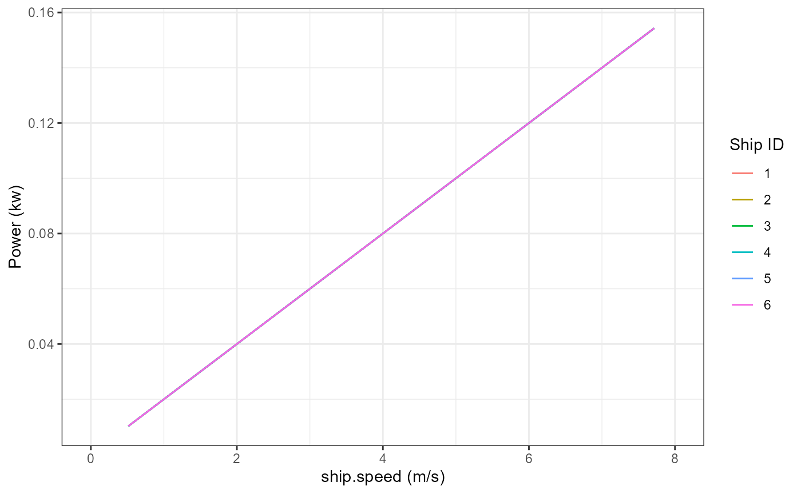

Propeller.Law.Example.RmdThis example demonstrates how to use the ShipPowerModel package to calculate the propulsive power in kW for a given set of ships traveling within a specified speed range using the propeller law. The needed inputs are: ship actual speed (m/s), ship service speed (m/s), and the engine’s Maximum Continuous Rating (kW).
ships <- read.csv(system.file("extdata", "Sample.Ships.csv", package = "ShipPowerModel"))
ships$ID <- c(1:6)
ships <- ships[, c("ID", "ship.type", "service.speed", "MCR")]| ID | ship.type | service.speed | MCR |
|---|---|---|---|
| 1 | bulk.carrier | 14.58 | 9363 |
| 2 | container.ship | 23.00 | 69029 |
| 3 | tanker | 15.00 | 13384 |
| 4 | container.ship | 20.50 | 23472 |
| 5 | tanker | 14.70 | 6300 |
| 6 | bulk.carrier | 13.43 | 3535 |
In this example, the “ship actual speed” will be a defined set of discrete speeds between 1 and 15 kn, over which we will estimate propulsion power. Typically, speed is reported in knots and needs to be converted to meters per second (m/s) for our calculations. After this step the dataframe ships gets long, so we will not show summary tables for the remaining calculations.
Note that these defined speeds are used to illustrate how to use this function; in practice, the actual speeds could be derived from various data sources, such as Automatic Identification System (AIS) data.
The discrete speeds are defined using c(1:15), merged with the ships dataframe, and converted to m/s using calcSpeedUnitConversion.
ships <- merge(ships, data.frame(ship.speed = c(1:15)))
ships$ship.speed <- calcSpeedUnitConversion(ships$ship.speed)After this, we calculate power using the propeller law function, calcPropPwr, which estimates the ship’s actual main engine power as a function of the ratio of a ship’s actual to maximum speed, scaled by the maximum continuous engine power.
ships$Power <- calcPropPwr(ships$ship.speed,
ships$service.speed,
ships$MCR,
serviceMargin = 15)The plot below shows the power curves calculated for each of the example ships:

Note: calcPropPwr has two additional parameters that may be used if needed:
n allows the user to specify a different exponential relationship. By default, this value is 3.refSpeedType allows the user to specify that the reference speed parameter is the vessel’s maximum speed, instead of the service speed.The example below shows how maximum speed can be estimated from the service speed, and then how to use calcPropPwr with this parameter instead.
ships$max.speed <- ships$service.speed / 0.94
ships$ref.speed.type <- "maxSpeed"
ships$Power <- calcPropPwr(ships$ship.speed,
ships$max.speed,
ships$MCR,
serviceMargin = 15,
refSpeedType = ships$ref.speed.type)